Omaha Travel Guide
Major metropolitan hub offering a wide range of cultural venues, recreational attractions, and dynamic arts and entertainment experiences.
Places to See in Omaha
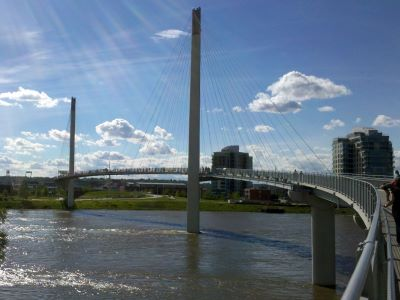
Des Moines Guy, CC BY-SA 3.0, via Wikimedia Commons; Image Size Adjusted

Bob Kerrey Pedestrian Bridge
Suspension-style footbridge offering scenic views, recreational trails, and a unique opportunity to stand in two states at once.
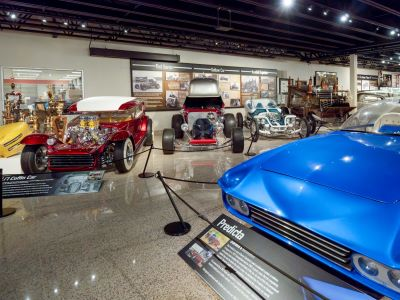
Danksergeant15, CC BY-SA 4.0, via Wikimedia Commons; Image Size Adjusted

Boys Town
Historic village and nonprofit campus offering museums, chapels, gardens, and exhibits that highlight a century of youth care and community service.
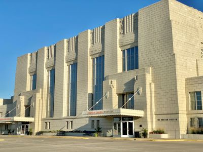
Danksergeant15, CC BY-SA 4.0, via Wikimedia Commons; Image Size Adjusted
Durham Museum
Historic train station transformed into a cultural museum featuring permanent and traveling exhibitions on regional history, science, and industry.
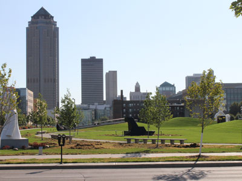
Dsmspence, CC BY-SA 3.0, via Wikimedia Commons; Image Size Adjusted

Gene Leahy Mall at Riverfront
Urban park featuring a performance pavilion, sculpture garden, modern playground, and dog park within a revitalized green space.
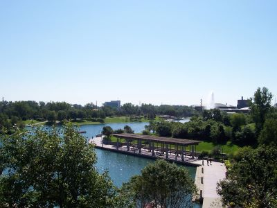
Jeff P from Berkeley, CA, USA, CC BY 2.0, via Wikimedia Commons; Image Size Adjusted
.jpg){kind=link}
Heartland of America Park at Riverfront
Modern urban park featuring a scenic lake, fountain displays, walking paths, public art, and sweeping views of Omaha's downtown and riverfront skyline.
Danksergeant15, CC BY-SA 4.0, via Wikimedia Commons; Image Size Adjusted
Holland Center
Modern performing arts venue featuring world-class acoustics, contemporary architecture, and a diverse lineup of concerts and cultural events.
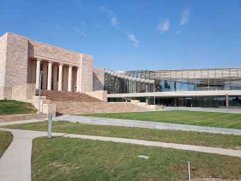
Jeff P from Berkeley, CA, USA, CC BY 2.0, via Wikimedia Commons; Image Size Adjusted
Joslyn Art Museum
Expansive museum featuring thousands of artworks, sculpture gardens, and rotating exhibitions across architecturally distinct gallery spaces.
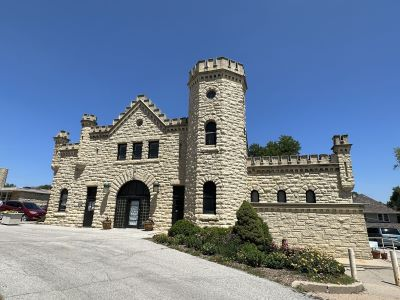
Jeff P from Berkeley, CA, USA, CC BY 2.0, via Wikimedia Commons; Image Size Adjusted
Joslyn Castle and Gardens
Historic mansion and gardens offering guided tours, cultural events, and a glimpse into Omaha’s gilded age architecture.
Danksergeant15, CC BY-SA 4.0, via Wikimedia Commons; Image Size Adjusted
Lauritzen Gardens
Botanical garden featuring seasonal plant displays, themed gardens, a conservatory, and educational programs across 100 acres.
Danksergeant15, CC BY-SA 4.0, via Wikimedia Commons; Image Size Adjusted
Lewis & Clark Landing at The RiverFront
Riverfront park offering scenic views, walking trails, event spaces, and access to the Bob Kerrey Pedestrian Bridge.
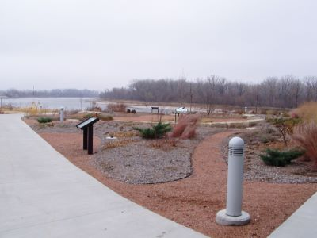
Jeff P from Berkeley, CA, USA, CC BY 2.0, via Wikimedia Commons; Image Size Adjusted
Lewis and Clark National Historic Trail Headquarters and Visitor Center
Interpretive visitor center offering exhibits, ranger programs, and trail information commemorating the Lewis and Clark Expedition.
Danksergeant15, CC BY-SA 4.0, via Wikimedia Commons; Image Size Adjusted
Omaha Performing Arts
Nonprofit arts organization presenting Broadway, concerts, and community programming across multiple downtown venues.
Danksergeant15, CC BY-SA 4.0, via Wikimedia Commons; Image Size Adjusted
Omaha's Henry Doorly Zoo and Aquarium
Expansive zoo and aquarium featuring immersive exhibits, indoor rainforests and deserts, and a wide variety of global wildlife.
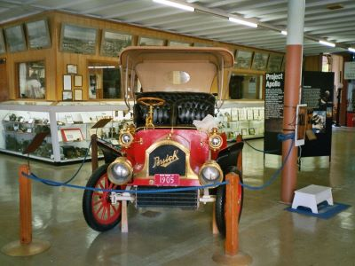
Danksergeant15, CC BY-SA 4.0, via Wikimedia Commons; Image Size Adjusted
Pioneer Village
Extensive museum complex presenting historical artifacts, restored structures, and exhibits chronicling technological and cultural development.
Danksergeant15, CC BY-SA 4.0, via Wikimedia Commons; Image Size Adjusted
Spirit of Nebraska Wilderness
Outdoor sculpture park featuring one of the world’s largest bronze installations depicting pioneer life, bison, and geese in motion.
Danksergeant15, CC BY-SA 4.0, via Wikimedia Commons; Image Size Adjusted
Standing Bear Lake
Expansive park with a 135-acre lake offering trails, fishing, model airplane field, and seasonal boating and ice skating.
Danksergeant15, CC BY-SA 4.0, via Wikimedia Commons; Image Size Adjusted
The Capitol District
Entertainment district featuring restaurants, bars, live music, and a central plaza for events and social gatherings.
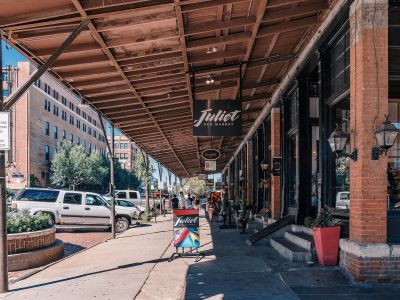
Jeff P from Berkeley, CA, USA, CC BY 2.0, via Wikimedia Commons; Image Size Adjusted
The Old Market
Historic entertainment and shopping district featuring preserved brick warehouses, locally owned boutiques, galleries, restaurants, and vibrant public gathering spaces.
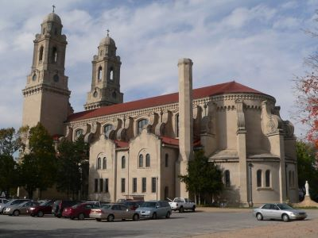
Jeff P from Berkeley, CA, USA, CC BY 2.0, via Wikimedia Commons; Image Size Adjusted
Saint Cecilia Cathedral
Architecturally significant cathedral offering daily Mass, religious art, and a museum within a historic Roman Catholic parish.
Danksergeant15, CC BY-SA 4.0, via Wikimedia Commons; Image Size Adjusted
Zorinsky Lake Trail
Paved recreational trail encircling a scenic lake with opportunities for walking, biking, birdwatching, and fishing.
Overview
Omaha is the largest city in Nebraska, on the west bank of the Missouri River, and it is known for its world-class zoo, its steaks, the headquarters of Berkshire Hathaway and the "Oracle of Omaha" Warren Buffett, and the College World Series. It is also an important city in the history of the transcontinental railroad, since it was the eastern base of the Union Pacific Railroad, and it has a friendly, understated Midwestern character that contrasts with its sophisticated downtown.
Visitors come to Omaha for Henry Doorly Zoo and Aquarium, one of the best zoos in the world, for the Old Market district, and for the Joslyn Art Museum and the Durham Museum. They also come for the Bob Kerrey Pedestrian Bridge, the Gene Leahy Mall, Lauritzen Gardens, and baseball in June at the College World Series.
History
Omaha was founded in 1854 by speculators from Council Bluffs, Iowa, and named for the Omaha tribe, and it became the capital of Nebraska Territory in 1855. In 1863, President Lincoln selected Omaha as the eastern terminus of the Union Pacific Railroad, which spurred growth, and the city also became a major center for meatpacking, with its Union Stockyards among the largest in the world. The city hosted the Trans-Mississippi Exposition in 1898, and in the twentieth century it became known for insurance, telecommunications, and finance, with companies such as Mutual of Omaha, Union Pacific, and Berkshire Hathaway. The city's downtown has been transformed in recent decades with riverfront redevelopment.
Sightseeing and Popular Landmarks
The Old Market is a district of brick streets and restored warehouses with restaurants, galleries, and shops, and the Bob Kerrey Pedestrian Bridge crosses the Missouri River to Iowa, with a point in the middle where you can stand in two states. The St. Cecilia Cathedral is a Spanish Renaissance landmark, and the Gene Leahy Mall and Heartland of America Park are urban parks. Boys Town, the Joslyn Castle, and the Capitol District are other sights.
Culture and Museums
The Joslyn Art Museum has an excellent collection of European and American art, including works by Karl Bodmer, and the Durham Museum, in the Art Deco Union Station, has exhibits on the history of the region. The Omaha Performing Arts organization runs the Holland Performing Arts Center, which hosts concerts, Broadway shows, and the Omaha Symphony, and the Holland Center is one of the best concert halls in the Midwest. The Omaha music scene is also known for indie bands and for venues such as The Waiting Room.
Parks
The Henry Doorly Zoo and Aquarium, with its Desert Dome, Lied Jungle, and Kingdoms of the Night, is the biggest attraction among the parks, and Lauritzen Gardens is a large botanical garden with a model railroad. Standing Bear Lake and Zorinsky Lake offer trails and fishing, and the riverfront has the Lewis and Clark Landing. The Keystone Trail and the Field Club Trail are popular for biking.
Seasons and Weather
Omaha has a humid continental climate. Summers are hot and humid, with highs in the upper 80s°F, and winters are cold, with highs in the 30s°F and about 28 inches of snow. Spring and fall are mild, and severe thunderstorms, tornadoes, and floods are possible in spring and summer, and the best time to visit is from May to October.
This article uses material from Wikipedia as well as information from official tourism and institutional sources. Key references include Visit Omaha, Omaha's Henry Doorly Zoo and Aquarium, Joslyn Art Museum, The Durham Museum, Lauritzen Gardens, College World Series, and National Weather Service Omaha. Wikipedia material is from the article "Omaha, Nebraska", and is available under the Creative Commons Attribution-Share-Alike License 3.0.